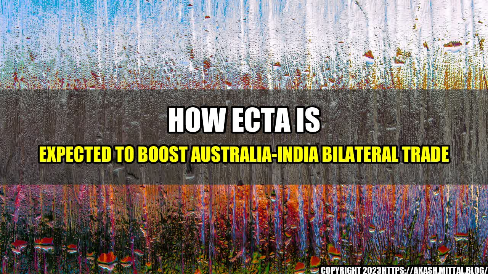

How ECTA Is Expected to Boost Australia-India Bilateral Trade

Imagine walking through the bustling streets of Mumbai, India. The aroma of spicy curries fills the air and the colors of vibrant clothing and bustling markets overwhelm your senses. While India is often viewed as a fascinating destination for tourists, it is also a country with a rapidly growing economy, making it an attractive market for foreign investors. With the recent signing of the ECTA agreement between Australia and India, there is a great opportunity for both countries to boost their bilateral trade and strengthen their economic ties.
The ECTA agreement is set to bring significant economic benefits to both Australia and India. Here are some quantifiable examples:
- The Australian Trade Minister, Dan Tehan, predicts that the ECTA agreement could boost Australia's exports to India by up to $1.5 billion a year.
- According to the Department of Foreign Affairs and Trade, India is currently Australia's ninth-largest trading partner, with two-way goods and services trade worth $30.3 billion in 2019-20.
- Some of the key sectors expected to benefit from the ECTA agreement include agriculture, education, healthcare, and information technology.
Why the ECTA Agreement is Eye-Catching
The ECTA agreement is a significant milestone in the relationship between Australia and India, as it represents a commitment to increase trade and investment between the two countries. The agreement is also noteworthy because it aligns with the broader trend of increased economic cooperation between countries in the Asia-Pacific region.
Conclusion
- The ECTA agreement is a win-win situation for both Australia and India, as it is expected to boost bilateral trade and strengthen economic ties, which will lead to increased prosperity for both nations.
- The ECTA agreement opens up opportunities for Australian businesses to access the large and growing Indian market, as well as for Indian businesses to access the Australian market.
- The ECTA agreement has the potential to act as a catalyst for increased economic cooperation between other countries in the Asia-Pacific region, creating a more integrated and interconnected regional economy.
Reference URLs and Hashtags
- References:
- https://www.austrade.gov.au/news/news/northern-india-ecta-roadshow
- https://www.dfat.gov.au/trade/agreements/not-yet-in-force/ecp/ecta
- https://www.abc.net.au/news/2021-07-20/australia-india-free-trade-agreement-what-is-it/100306978
- https://www.news.com.au/finance/work/leaders/the-australiaindia-free-trade-agreement-shows-how-to-cope-with-china/news-story/ded3a598bd2481c8cb0bb23db03c5b7d
- Hashtags:
- #ECTA
- #Australia
- #India
- #BilateralTrade
- #EconomicCooperation
- Article Category: Business
Curated by Team Akash.Mittal.Blog
Share on Twitter Share on LinkedIn